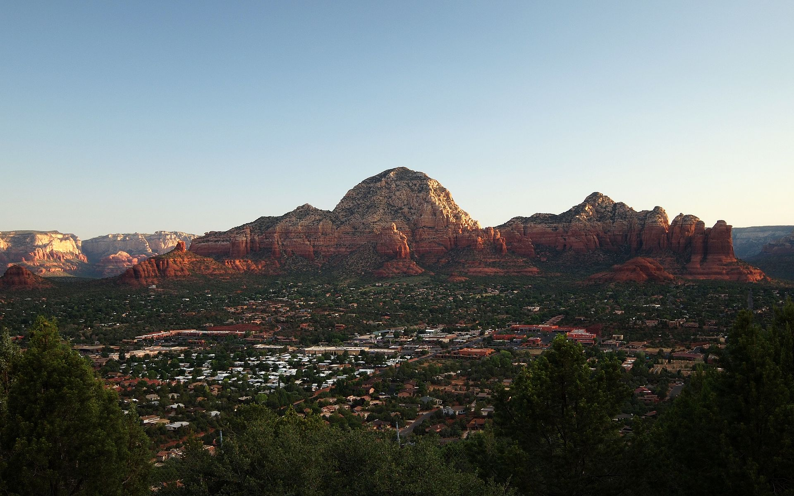

Sedona, Arizona

Sedona is a city in Northern Arizona with a population of 10,000. It is a popular tourist destination with many trails, shops, and restaurants nearby. Common destinations include Chapel Rock, the Devil's Bridge, and Grasshopper Point.